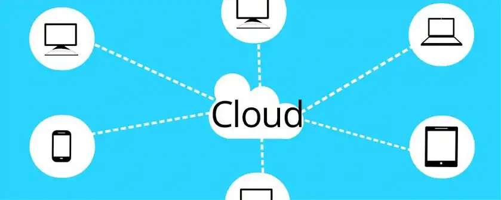

Charakteristika von Social Media
Social Media Grundlagen
- Besonderheiten Social Media
- Cloud statt Programme
- Nutzer-Teilhabe
- Erfolgsfaktor Netzwerkeffekt
- Immer im Beta-Status
- Den Ruf Bilden
Weiter im Lehrgang
Übersicht Lehrgang
Die Besonderheiten von Social Media
Social Media ist nicht einfach die Weiterentwicklung von Web 2.0., sondern ein anderer Betrachtungswinkel dessen. Es setzt auf die 7 Prinzipien des Web 2.0 auf und bildet seine eigenen Besonderheiten. Web 2.0 ist das technische Fundament. Es gibt charakteristische Merkmale die sich alle Social Networks teilen. Du als Social Media Manager solltest diese Merkmale kennen, so dass du verstehst wie Social-Media funktioniert.
Keine lokalen Programme, sondern Services

In den Networks nutzen wir Services, statt Programme die auf dem PC installiert werden. Die Services laufen in der Cloud, also auf den Servern der Anbieter. Somit ist es möglich, den Service zu jeder Zeit, von verschiedenen Geräten und an jedem Standort der Welt zu nutzen. Das Programm, das von den Usern genutzt wird, läuft nicht auf dem Endgerät, sondern in der Cloud auf dem Server.
Nutzer-Teilhabe, User-Partizipation
Nachdem sich Web 2.0 etabliert hatte und Social Media immer erfolgreicher wurde, nahm die Bedeutung der Nutzer-Partizipation, also das Teilhaben beim Erschaffen von Inhalten zu. Wo im Web 1.0 nur die Betreiber von Webseiten Inhalte erschufen, können heute die Nutzer Inhalten schaffen. Im Web 1.0 war eine Meinung im Internet und konnte nicht berichtigt oder geändert werden, außer vom Ersteller.
Eine der bekanntesten Webseiten mit User Generated Content ist Wikipedia. Alle Beiträge die in Wikipedia zu finden sind, sind auf der Basis des Crowdsourcing, also der Einbindung des Kollektivs zur Wertschöpfung verfasst worden. Viele Menschen schreiben ihr Wissen als Beitrag nieder und alle anderen können die Beiträge bearbeiten oder erweitern. So wird das Wissen umfangreicher und fehlerfreier. Die Nutzer pflegen Wikipedia, das wird als Co-Creation bezeichnet. Auch viele Unternehmen nutzen Co-Creation in ihrer Wertschöpfungskette. Das können Produkttester oder ganz simpel die Onlinebewertungen bei Amazon sein.
So kann das Unternehmen teure Werbespots einsparen, und Nutzer Teilen bestenfalls ihre guten Erfahrungen mit dem dem Produkt. Der Nachteil für das Unternehmen ist, wenn das Produkt schlecht ist, wird auch das geteilt. Es findet also keine Selektion statt.
Durch Social Media sind die Nutzer in der Lage Werbung oder Negativwerbung zu machen. Stichwort Influencer. Wir reden dann nicht vom Produzenten oder Konsumenten (Producer, Consumer), sondern vom Prosumenten ). Die Grenzen sind verschwommen und mischen sich. Firmen sind auf die Nutzer und deren Wohlwollen angewiesen und können sich dem nicht entziehen. Das bietet Chancen und Risiken für Unternehmen.
Erfolgskritischer Faktor Netzwerkeffekt
Als erfolgskritische Faktoren werden Ressourcen oder Fähigkeiten bezeichnet, die für den Erfolg eines Unternehmens, hier eines Social Networks von allergrößter Bedeutung sind. Der Erfolg eines sozialen Netzwerkes wird vor allem an der Anzahl der Mitglieder gemessen. Die Dienste, besonders die kommerziellen wie zum Beispiel das Werben auf Facebookoder YouTube bringt nur Erfolg, wenn viele Nutzer im Netzwerk sind, die diese Werbung auch sehen und darauf reagieren können. Auch bei geschäftlichen Social Networks wie LinkedIn, hat dieses nur einen Nutzen für den Einzelnen, wenn viele Menschen an dem Netzwerk teilnehmen.
Auf Bewertungsportalen ist es wichtig, dass viele Mitglieder diesem angehören, um die Bewertungen auch glaubwürdig zu machen. Der Netzwerkeffet als erfolgskritischer Faktor macht Social Media erst sinnvoll für den User.
Ein weiterer erfolgskritischer Faktor ist die Skalierbarkeit eines Unternehmens bzw. eines Networks. Soziale Netzwerke, wie YouTube sind auf Wachstum ausgerichtet. Besonders, wenn ein neues Network ans Netz geht und dieses sich einer gewissen Beliebtheit erfreut, ist das Wachstum in der Anfangsphase meist gewaltig. Cloud-Dienste lassen sich problemlos im laufenden Betrieb skalieren, in dem man mehr Speicher und Rechenkapazität zur Verfügung stellt. Ein Restaurant, das Aufgrund einer Werbung plötzlich 100 % mehr Reservierungen erhält, kann sich im Betrieb nicht so einfach skalieren und den Gastraum vergrößern.
Die Möglichkeiten, die Geschwindigkeit und die Stabilität der Skalierbarkeit von Cloud-Diensten sind die fundamentalen erfolgskritischen Faktoren. Ein Netzwerk muss wachsen, um erfolgreich zu sein.
Dienste immer im Beta-Status
Es gibt keinen erfolgreichen Dienst der nicht weiterentwickelt wird. Allein die Weiterentwicklung von Servern, Protokollen, Datenleitungen und der Infrastruktur des Internets selbst und besonders die Entwicklung im Mobil-Sektor zwingt die Dienst-Anbieter weiterzuentwickeln. Und das geschieht in so einer hohen Geschwindigkeit, dass es gar nicht möglich ist seine Software nicht im Beta-Status zu entwickeln.
Besonders bei Facebook werden neue Tools online geschaltet und die User Testen das Produkt. Hier nenne ich mal Facebook Watch, die Videoplattform von Facebook. Welche Vorteile bieten die Dienste in der Cloud und der Beta-Status?
- Zentrale Softwarespeicherung
- Zentrale Aktualisierung der Software
- Kein User nutzt alte Software
- Geringes Speicheraufkommen, Millionen Installationen fallen Weg
- Serverseitige Ausführung grenzt clientseitige Individual-Fehler ein
- User testen Live, geben Rückmeldung und der Anbieter kann reagieren
- Pressen von Millionen CDs fällt weg
- Sicherer gegen Hacker, da nicht die Clinents zum Ziel werden
- Höchste Kontrolle für den Anbieter
- Extrem schnelle Datenverarbeitung und Dienstverknüpfung
- Absolutes Wissen für Anbieter: Wer, Wann, Wo, Was...
- Höchste Sicherheit für den Client
- Sofotige Verfügbarkeit auf vielen Geräten, oft ohne zusätzliche Software
Im Betastatus ist jeder Anwender ein Tester und hilft ohne Umwege einen Dienst oder eine Software zu verbessern.
Reputation Economy - Den Ruf Bilden
Persönliche Kommunikation besteht darin einem Menschen gegenüberzustehen und mit ihm zu sprechen. Das ist die Mund-zu-Mundkommunikation, die Mundpropaganda. Durch die sozialen Medien hat sich die Kommunikation verändert. Man spricht nicht mehr direkt miteinander, sondern in Form von Kommentaren oder Bewertungen. Kommentare und Bewertungen sind in allen Netzwerken die Grundlage der Kommunikation. Inzwischen ist diese Art des Kommunizierens so etabliert, dass man hier von einer persönlichen Kommunikation spricht.
Bewertungen, auch wenn sie geschrieben sind, folgen den Prinzipien der persönlichen Kommunikation und werden oft so geschrieben, als würde es dir der Schreiber direkt ins Gesicht sagen. Somit sind die Nutzer in den sozialen Medien in der Lage den Ruf eines Produktes oder Unternehmens direkt und selbst zu bilden, ganz so als sprächen sie auf der Straße miteinander. Kaufentscheidungen werden dadurch enorm beeinflusst.